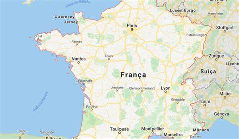

Dados Gerais
Localização Geográfica
A França está localizada na Europa Ocidental. Faz fronteira com Alemanha, Espanha, Itália, Bélgica, Luxemburgo, Suíça, Andorra e Mônaco. Possui litoral no oceano Atlântico, no mar Mediterrâneo e no canal da Mancha. Seu relevo inclui planícies, vales e cadeias montanhosas como os Alpes e os Pireneus.
Clima
O clima da França é variado devido à sua extensão e diversidade geográfica. No norte e oeste predomina o clima oceânico, com invernos amenos e verões frescos, além de chuvas bem distribuídas ao longo do ano. No sul, o clima é mediterrâneo, com verões quentes e secos e invernos suaves. Na região central e oriental, o clima é continental, com invernos frios, verões quentes e maior variação de temperatura. Nas áreas montanhosas, como os Alpes e os Pireneus, o clima é alpino, com invernos rigorosos e muita neve.
População
A França tem uma população de aproximadamente 68 milhões de habitantes. A maioria vive em áreas urbanas, sendo Paris a cidade mais populosa e a capital do país. Outras grandes cidades incluem Marselha, Lyon, Toulouse e Lille. A população francesa é diversa, com influências culturais de várias regiões e países, resultado da imigração ao longo das décadas. A densidade populacional é maior no norte e centro do país, enquanto as áreas rurais e montanhosas são menos povoadas.